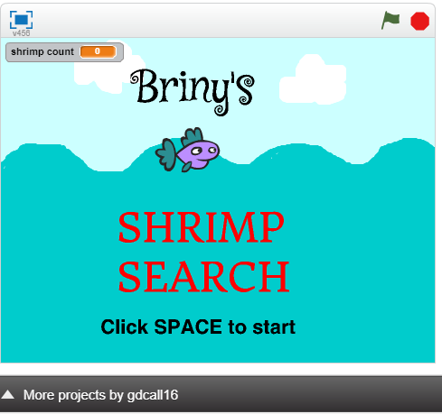
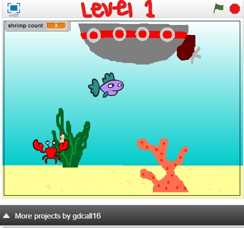
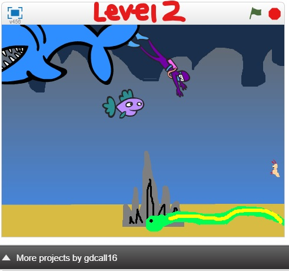

This summer I am participating in the Girl's Who Code summer immersion program. I was so excited for this summer to begin, and now I am so happy that is is here. This is such a great oppertunity, and I am so fortunate that I got a chance to be in this program.
Once September starts I will be a junior at Edmonds Woodway high School. It will be my first year as a full IB (international baccalaureate) canidate; that means I will take all IB classes, which consist of challenging material and a rigourous schedule. Despite this, I will still have lots of freetime. With some of this time, I will be on varsity tennis fo rthe second year, be on the speech and debate team, be in key club, am a member of National Honors Society, am a ASB officer, voluteer at Mary's Place, and I am excited to join Science Club and Robotics. Other than this I love to spend time with my friends, go hiking, cook, and participate in theatre
Hover over this paragraph to learn TWO cool things about me.
I love many things! Some of my favrite things are animals, cereal, friends, family, travel, and learning new things. This is on of my favoirte pictures of a puppy

I have a strong distaste towards olvies, pickles, and spiders. However, I hate when my computer lags, and when the wifi is slow.
Everyone should get a dog. Go here to find your own little buddy
Go to Core 4 Page
During week one, out main project were side scroller games, which we got to desgin ourselves. My project parnter, Liz and I, were inspired by an underwater theme and created Briny's Shrimp Search. The objective is to collect 5 shrimps to level up and a total of 10 shrimps to win, but you have to avoid all of the obstacles.


